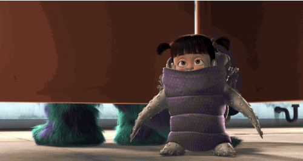

Solo hay unas ganas de hacer pis: las reales
No existen ganas “de mentira”. Lo que sientes, lo sientes de verdad.

Entiende por qué aparecen esas ganas que no te dejan tranquila y cómo empezar a reeducarlas, paso a paso.
Descargar la guía en PDFLas ganas siempre son reales. Pero no siempre la razón es que tu vejiga esté llena.
No existen ganas “de mentira”. Lo que sientes, lo sientes de verdad.
¿Podrías diferenciar lo que sientes cuando haces pis después de 5 horas… o después de 1? Aunque la razón no siempre es que tu vejiga esté llena.
Y si evalúa que es necesario, activa las ganas de ir al baño.
Hay situaciones que activan estas señales sin necesidad fisiológica real: ver una taza de váter, antes de un WOD o de un viaje largo pueden activar el “me meo”.
¿No te parece lógico sentir ganas repentinas de hacer pis? El entorno no le da a tu cerebro la seguridad de poder ir al baño cuando quiera, y se adelanta.
El cerebro evalúa con la información que ha ido validando a lo largo de la vida. Ha aprendido a dar una respuesta “urgente” en situaciones parecidas, aunque no siempre sea necesaria.
Ahora lo vamos a ver en profundidad…
Igual que tu cerebro aprendió a activar la señal de urgencia demasiado pronto, puede aprender a gestionarla de otra forma. La clave está en darle experiencias nuevas: momentos en los que no vas al baño enseguida… y ves que no pasa nada.
Prueba la escala: ¿cuántas ganas tienes ahora mismo?
Aquí es donde se reeduca la urgencia.
Lento y profundo.
Evita el hiperfoco cuanto antes. Haz algo que te pida atención plena y un rato “medio-largo”: escribir un mensaje, doblar la ropa, preparar la mochila…
Aunque sean solo 3–5 minutos. Cuanto más, mejor.
Con las ganas en un 6–7, empieza el bloque que te toque. Si suben, siempre podrías acabar yendo, pero respeta y no vayas.
Si tus ganas no pasan por el 6–7 y saltan directamente al 8, inténtalo igualmente, a ver si bajan con la actividad. Cuanto más practiques este retraso controlado, más se regula la respuesta de tu cerebro.
Muchas veces hacemos pis “por si acaso”: antes de salir, antes de entrenar, antes de dormir… Pero eso refuerza el mensaje de que, siempre que aparece la sensación, hay que ir corriendo al baño.
“He esperado y no ha pasado nada.”
Cada una de esas experiencias le enseña a tu cerebro que puede tolerar la sensación sin riesgo. Y cuando vuelva a ocurrir, podrás recurrir a esa experiencia.
Para los momentos en los que más tiendes a ir al baño: antes de entrenar, por las mañanas… (enseguida verás cómo detectarlos).
Durante 15 días, anota:
Así verás patrones: horarios o situaciones donde aparece más la urgencia, o si hay “mear por rutina”. Con esos datos eliges en qué momentos practicar el retraso o ajustar tus hábitos.
| Hora | Bebo | Pis | Contexto |
|---|---|---|---|
| 07:30 | Café 200 ml | — | Al despertar |
| 08:10 | — | Mucho | Normal |
| 09:00 | Agua 300 ml | Poco | Urgencia · antes del WOD |
| 11:45 | — | Normal | Normal |
| 14:20 | Agua 400 ml | — | Comida |
| 15:10 | — | Poco | Por si acaso, al salir |
Durante todo el proceso evitaremos el hiperfoco: pensar mucho en ello o quedarte ahí mucho rato aumenta las ganas de ir al baño. Si pones el foco, por ejemplo para rellenar el diario, enseguida lo cambias.
La evidencia actual muestra que la vejiga no es un órgano estéril: alberga una microbiota urinaria que interactúa con el sistema inmunitario y el sistema nervioso. En mujeres con vejiga hiperactiva se ha observado menor diversidad microbiana y más predisposición a la disbiosis, incluso sin infección urinaria activa.
Una alteración bacteriana en la uretra podría tener un papel importante en el desarrollo del síndrome de vejiga hiperactiva.
¿Por qué? Estas alteraciones pueden generar una inflamación crónica de bajo grado que sensibiliza las vías aferentes de la vejiga y favorece la hiperactividad del músculo detrusor (el encargado de almacenar y vaciar la orina). Como consecuencia, la vejiga responde de forma anticipada ante volúmenes bajos de llenado.
Esto no implica necesariamente una infección urinaria activa: puede haber cambios microbianos y activación inmunitaria local sin signos clínicos claros. Es lo que a veces se llama “inflamación silenciosa”.
Estos factores pueden influir tanto en la microbiota como en la respuesta del sistema inmune, favoreciendo un estado de mayor reactividad de la vejiga.
Sze, C. et al. “The gut, vaginal, and urine microbiome in overactive bladder: a systematic review.” International Urogynecology Journal, 33(5), 2022.
Koch, M. et al. “Women suffering from overactive bladder syndrome exhibit a higher urethral viral abundance compared to healthy controls: a pilot study.” Scientific Reports, 15(1):19484, 2025.

Entrenadora especializada en mujer y entrenamiento de fuerza. Mi misión es ayudar a las mujeres a entrenar respetando su biología, rompiendo miedos y adaptando el entrenamiento a su realidad psicosocial.
Desde que empecé me di cuenta de que el deporte está diseñado principalmente por y para hombres, y deja fuera muchas de nuestras necesidades, entre ellas abordar las disfunciones del conjunto abdominal-lumbar y suelo pélvico (CALP).
La información por sí sola no transforma, pero la consciencia sí. Ojalá esta guía te haya hecho mirar con otros ojos tus ganas de hacer pis… y todo lo que implican para tu cuerpo.
Si este material te ha hecho pensar, si sientes que te representa, y si hasta ahora has entrenado como has podido pero quieres más herramientas… esto es solo el principio.
Si quieres ir a la raíz, individualizar tu entrenamiento y entender tu cuerpo de verdad, escríbeme:
“Estoy lista para integrar el CALP en mi entreno”.
Porque no estás sola, y entrenar con seguridad y confianza sí es posible.
Un abrazo, Violeta Gil Pablo